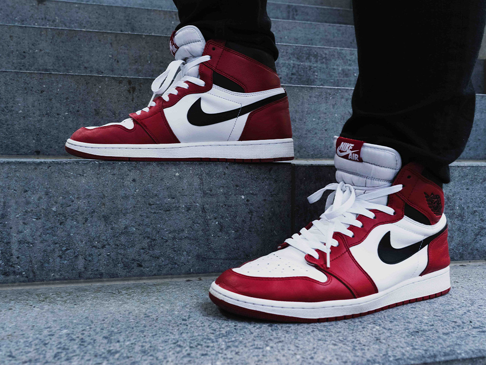
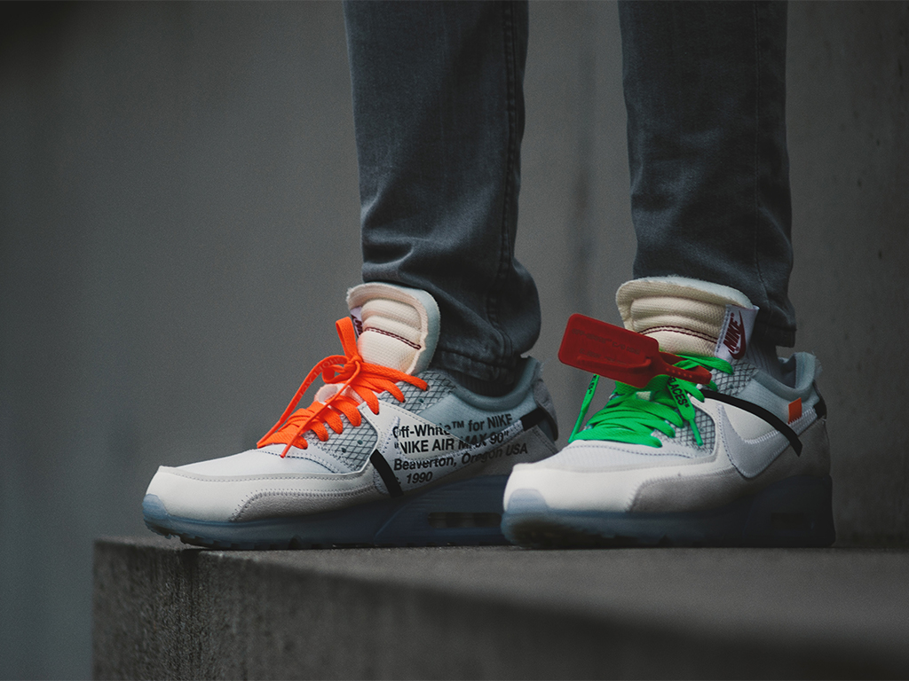
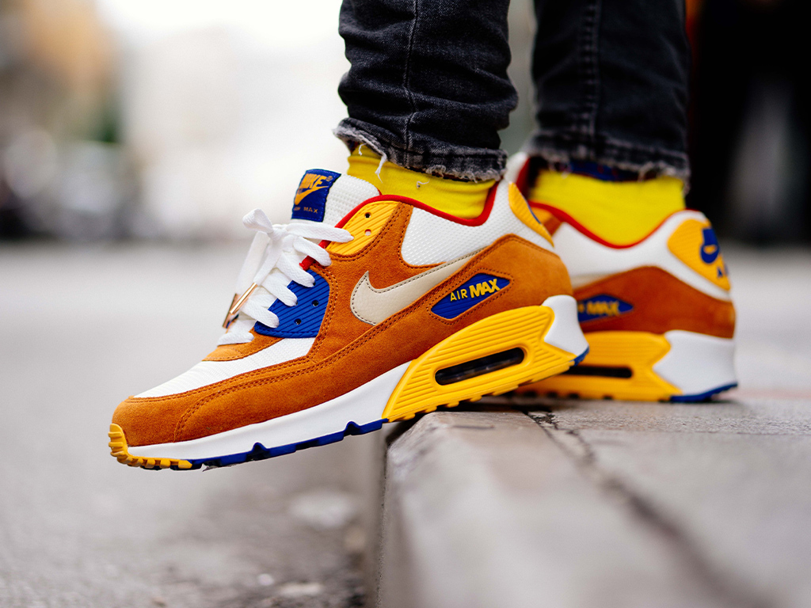

How did we start?
When talking about shoes, people talk about the price or the color, but Marco's Sneakers focus on the story behind, the reason the shoe got made. Hopefull, after you've read some facts on my webpage, you'll learn something new, and maybe you want to find out fact about your own shoe!
-

Air Jordan 1 Retro High OG
Similar to the 2013, the two share the same original color theme of white, black and varsity red. The only difference here is the Nike Air branding on the tongue and insole and being factory unlaced. Also make note that the 2015 version is remastered which means they will feature premium materials and better construction process.
-

White & Black Low Vulcanized Sneaker
Low-top grained leather sneakers in white. Round toe. Tonal lace-up closure featuring signature zip-tie in red. Logo and text printed in black at padded tongue and inner side. Padded collar. Logo appliqué in black suede at outer side. Panelled rubber midsole striped in black and white featuring semi-transparent trim in red at inner side. Rubber outsole in black.
-

The Air Max 97
After surfacing in several light tonal colorways over the last few weeks, Nike’s storied Air Max 97 has now arrived in a bright mustard yellow—a surprising switch of sorts as the Swoosh Brand has seemingly been trending towards a more minimalist approach when it comes to color palettes for the bullet train-inspired runner. Offering a bright and bold look perfect for summer or fall, this new “Mustard” 97 features an intense yellow on the mudguard and plunging upper panels.
We got your favorite shoes
For now the shoes on our websites are very limited, as time moves on we will continue to add more shoes to our website, thank you for being patient.
Contact Us
If you would like to get in touch with us feel free to send us as email and ask us anything, we will do our best to reply within 24 hours.
Mattias.palmdahl@elev.ga.ntig.se
About Our Company
As stated before, this company is newly founded which is why the content is very limited. But we still do our best to share small intresting facts about shoes that you might not now.